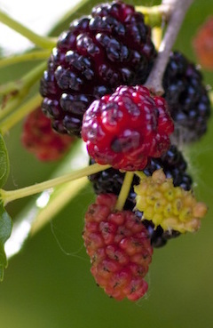

Mulberries
Gorgeous, juicy gems that are loved by both humans and critters alike; mulberries are a fantastic snack raw, baked or preserved.
Read More
Sassafras
The sassafras root is a fragrant and remedial edible that can be boiled in water and consumed as tea or turned into delicious root beer.
Read MoreWild Carrots
In it's early stages, the fleshy, white root of what would become Queen Anne's lace, is an abundant, wild carrot that can be added to soups, stews and casseroles.
Read MoreCattails
Although several parts of the cattail are edible, the young shoots can be consumed raw or cooked, and taste like sweet, succulent zucchinis.
Read More